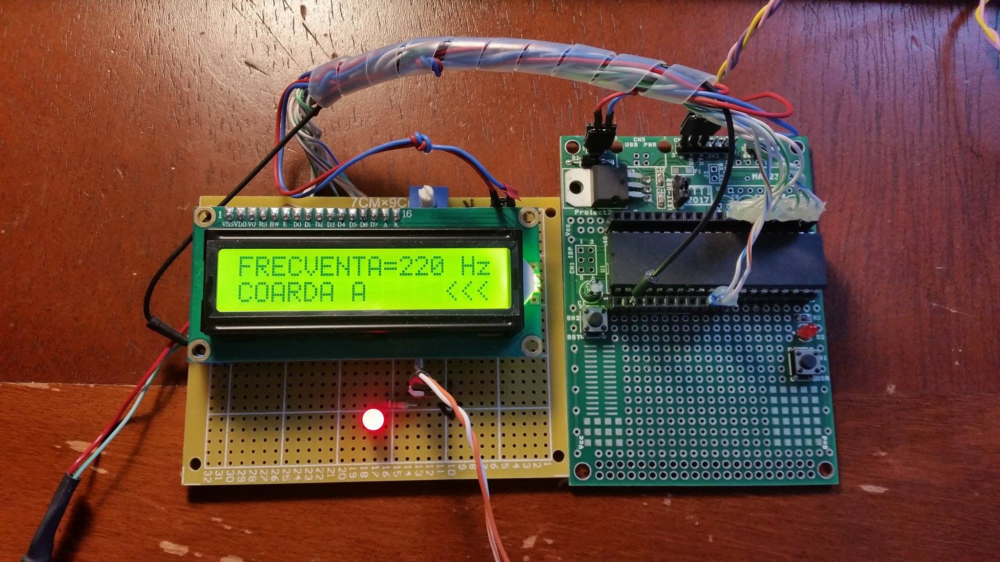

Proiect2-D52-Y13
Proiect 2 - Echipa Y13
Baicu Ioan & Paxaman Adelina
D52 Sistem pentru acordat chitara
Mod de implementare
Proiectul este un acordor de chitara care va functiona in felul urmator :se va selecta o coarda ce se doreste acordata prin apasarea unui buton corespunzator corzii. Dupa aceasta apasare, prin intermediul unui microfon cu condensator se va prelua sunetul caruia i se va masura frecventa si se va compara cu frecventa de referinta a notei corespunzatoare corzii acordate. Stadiul de acordare va fi afisat cu ajutorul ledurilor dupa cum urmeaza:
-
ledul rosu din stanga : frecventa este prea joasa
-
ledul verde din centru : frecventa este cea corecta
-
ledul rosu din dreapta : frecventa este prea inalta
Determinarea frecventei
Pentru masurarea frecventei se va urmari un algoritm ce presupune numararea fronturilor crescatoare ale semnalului intr-o secunda. Semnalul de la microfon va fi preamplificat (am ales un amplificator audio de tip LM386L) si apoi convertit intr-un semnal dreptunghiular, urmand sa fie aplicat pe portul cu T1 pin2 (PB1). Vom numara fronturile crescatoare si vom realiza un delay de o secunda dupa care vom opri timer-ul, urmand sa citim valoarea registrului TCNT1 ce contine numarul de fronturi crescatoare. In functie de numarul acestora se va determina frecventa dupa un algoritm simplu pe care il vom detalia la modul de implementare software.
Descrierea hardware
Poze stadiu curent:
Saptamana 5:

Saptamana 7:

Saptamana 10:

Schema electrica a circuitului de intrare

Semnalul afisat pe osciloscop este obtinut dintr-un semnal sinusoidal generat pentru simulare.

Schema electrica a circuitului

Bill of Materials

Saptamana 8:Descrierea software
In momentul de fata pe microcontroller ruleaza softul ce returneaza, la apasarea tastei "?", numele si numarul echipei cat si luminarea LED-ului cu 3 frecvente diferite la apasarea unui buton.
Saptamana 11:
Semnalul va fi aplicat pe portul PB1 asa cum am precizat la modul de implementare.
Vom activa intreruperile pentru timer1 si vom numara aparitiile acestora. Overflow inseamna ca timer1 a facut 2^16 numarari.
Pentru calculul frecventei se va folosi ecuatia : F = k*2^16 + TCNT1 ,unde k reprezinta numarul de overflow-uri intr-o secunda.
Pentru a semnaliza acordajul prin apriderea LED-urilor vom folosi porturile:
PA0-rosu_low, PA1-verde_acordat, PA2-rosu_high.
In urma compilarii am obtinut aceste rezultate:
(Data Stack size: 256 byte(s)
Estimated Data Stack usage: 35 byte(s)
RAM Global variables area: 0x160 to 0x167
RAM Global variables size: 8 byte(s)
Hardware Stack area: 0x168 to 0x45F
Hardware Stack size: 760 byte(s))
Si astfel am constat ca resursele necesare rularii softului sunt suficiente.
Rezultate si concluzii
Prima problema pe care am intampinat-o a fost ca am avut cablajul intrerupt dintre pinul Rx de pe placa si microcontroller. Aceasta problema a fost identificata folosind aparatul de masura setat pe “piuitoare” reusind sa descoperim ca intreruperea era exact langa pinul de la marginea placutei. Apoi am pilit putin cablajul si am prelungit cu fludor traseul in zona unde era intrerupt. Se poate vedea în poza de mai jos problema solutionata.

Intr-un final am reusit respectarea cerintelor folosindu-ne de o schema simpla studiata in cadrul laboratorului de IEM semetrul trecut.

Aceasta este schema ce in cadrul laboratorului deservea ca ohmmetru cu scara liniara. Principiul era urmatorul :
- aplicam un semnal la intrare;
- Masuram semnalul la iesire;
- Aflam amplificarea A=Vout/Vin;
- A=-Rx/R2 = > ; Rx= ... ;
Noi am folosit Rx si R2 calculate astfel incat sa avem o amplificare de aproximativ 40, intrucat tensiunea de la intrarea acordorului nostru poate proveni de la un microfon sau de la o chitara (dispozitive ce pot furniza in jur de 0.2 V).
Astfel de la 0.2 V la intrare vom obtine la iesire o tensiune de aproximativ 4V.
Semnalul obtinut de la iesirea amplificatorului a fost aplicat pe pinul PB1(T1) urmand ca din setarile soft sa numaram cu ajutorul timerului 1 fronturile crescatoare ale unui clock extern pentru un timp de o secunda, astfel acest numar de fronturi este chiar frecventa notei pe care o masuram.
Poza cu rezultatul final

Aceasta idee este mult mai optima decat cele pe care le-am gandit la inceput deoarece nu consuma multe resurse asemeni metodei ce implementa FFT.
Initial am dorit realizarea unui acordor cu afisaj pe baza de diode LED, dar pentru rigurozitate si pentru a putea afisa atat denumirea corzii cat si frecventa acesteia am ales folosirea unui LCD 16x2.
Bibliografie
Schema amplificatorului :
Informatii despre configurarea LCD-ului
Foi de catalog AT Mega16